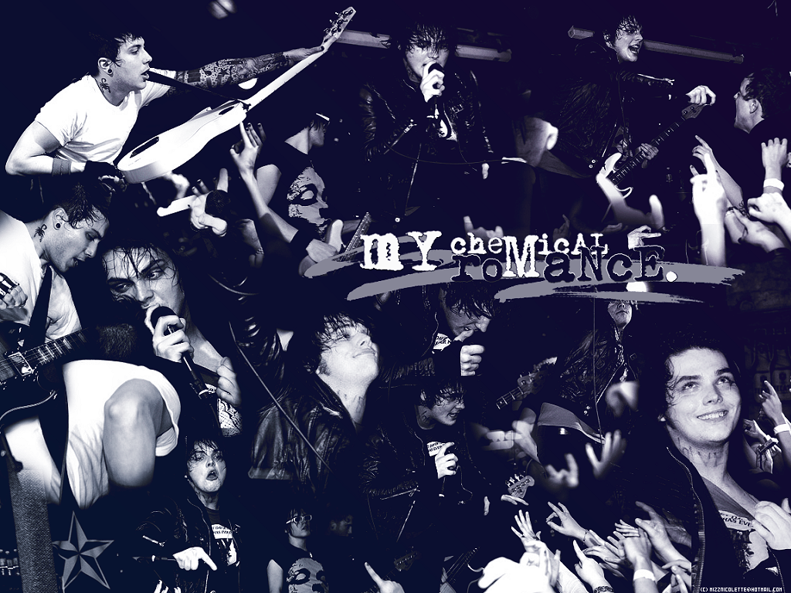
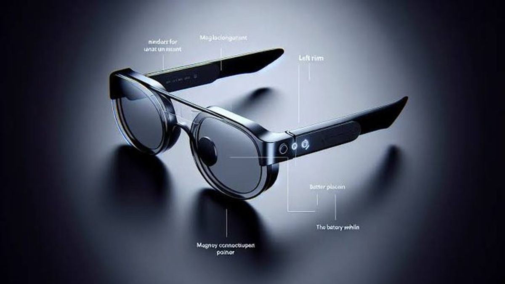

🎵 Helena: Lagu Emosional dari My Chemical Romance

"Helena" adalah lagu dari band rock Amerika, My Chemical Romance... Lagu ini dikenal dengan lirik emosional dan video musik yang dramatis...
Lirik:
Long ago
Just like the Hearse you die to get in again
We are so far from you...
Just like the match you strike to incinerate
The lives of everyone you know
And what's the worst you take
From every heart you break?
And like the blade you'll stain
Well, I've been holding on tonight
What's the worst that I can say?
Things are better if I stay
So long and goodnight
So long and goodnight
Came a time
When every star fall
Brought you to tears again
We are the very hurt you sold
And what's the worst you take
From every heart you break?
And like a blade you'll stain
Well, I've been holding on tonight
What's the worst that I can say?
Things are better if I stay
So long and goodnight
So long and goodnight
Well, if you carry on this way
Things are better if I stay
So long and goodnight
So long and goodnight
Can you hear me?
Are you near me?
Can we pretend to leave and then
We'll meet again
When both our cars collide
What's the worst that I can say?
Things are better if I stay
So long and goodnight
So long and goodnight
And if you carry on this way
Things are better if I stay
So long and goodnight
So long and goodnight...
Lihat selengkapnya
👓 Teknologi: Kacamata Pintar

Kacamata pintar adalah kacamata yang memiliki teknologi canggih seperti layar kecil, kamera, dan koneksi internet...
- Navigasi – Menampilkan arah tanpa harus melihat HP.
- Pekerjaan – Membantu dokter, teknisi, atau pekerja industri.
- Hiburan – Menonton video atau bermain game.
🏃 Manfaat Olahraga Lari
Lari adalah olahraga sederhana yang memiliki banyak manfaat bagi kesehatan tubuh dan pikiran...